A 2-layer LSTM recurrent neural network for predictive analysis of financial time series. It processes five stocks (AAPL, GOOGL, MSFT, TSLA, AMZN) with 2020–2025 data and measures accuracy with rigorous quantitative metrics.
Financial markets are complex, non-linear and unpredictable systems. The predictions generated are not financial advice and must not be used for real investment decisions. Past results do not guarantee future results.
Best MAPE
2.10%
Microsoft (MSFT)
Stocks analysed
5
AAPL · GOOGL · MSFT · TSLA · AMZN
Historical data
~1,500
Days per stock (2020–2025)
Architecture
100–50
LSTM units per layer
| # | Ticker | MAPE | RMSE | Interpretation |
|---|---|---|---|---|
| 01 | MSFT | 2.10% | $11.91 | Exceptional |
| 02 | GOOGL | 2.91% | $7.96 | Exceptional |
| 03 | AAPL | 3.29% | $9.36 | Exceptional |
| 04 | AMZN | 3.61% | $9.35 | Exceptional |
| 05 | TSLA | 7.55% | $33.61 | Very good* |
* Tesla has higher inherent volatility, which explains a higher MAPE. MAPE values < 5 % are considered exceptional in financial forecasting.
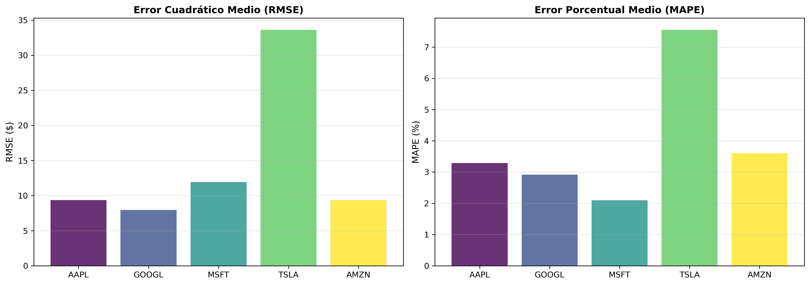
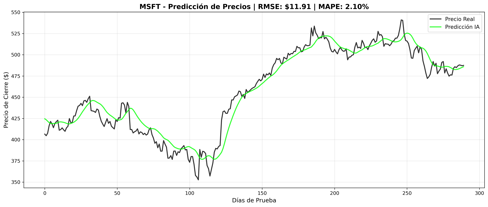
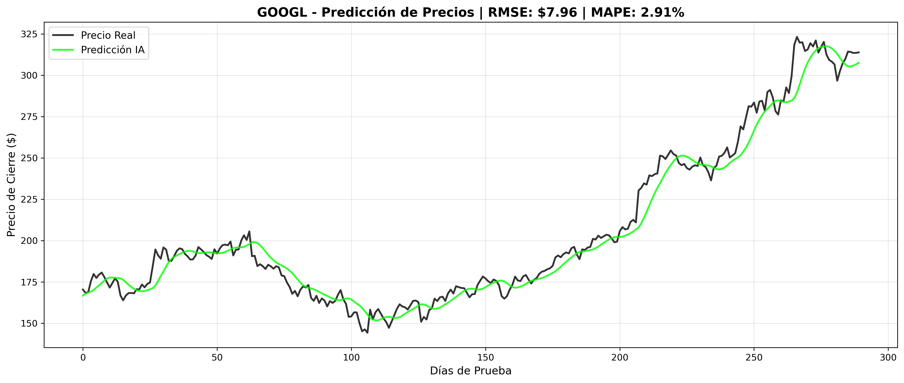
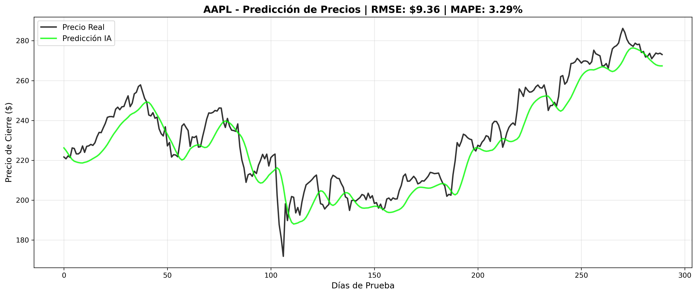
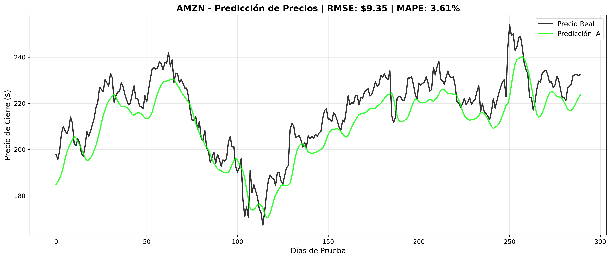
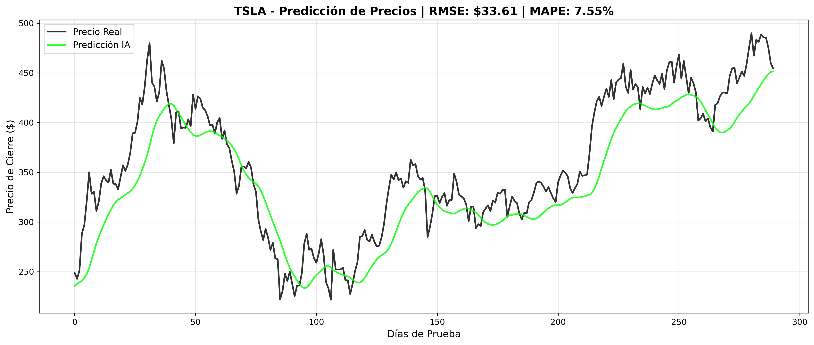
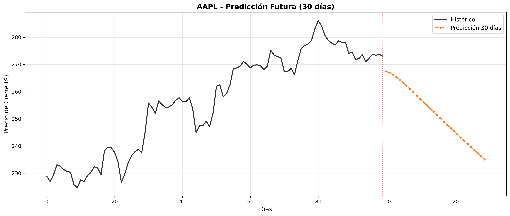
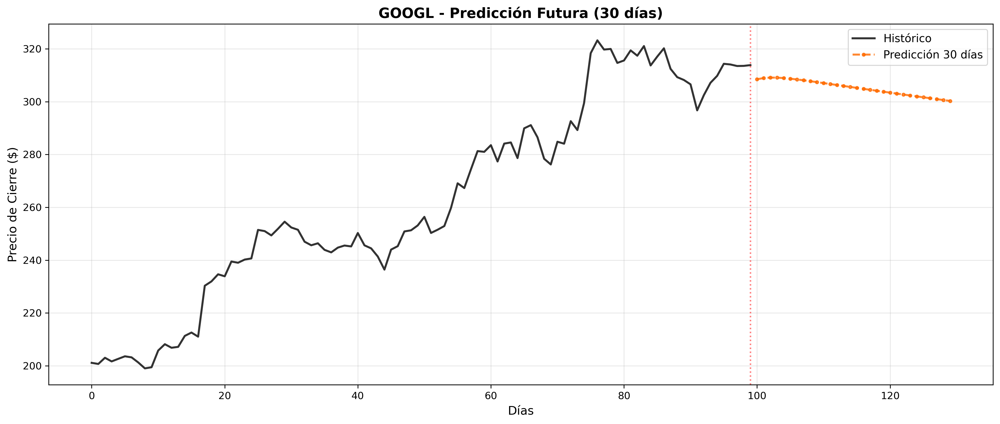
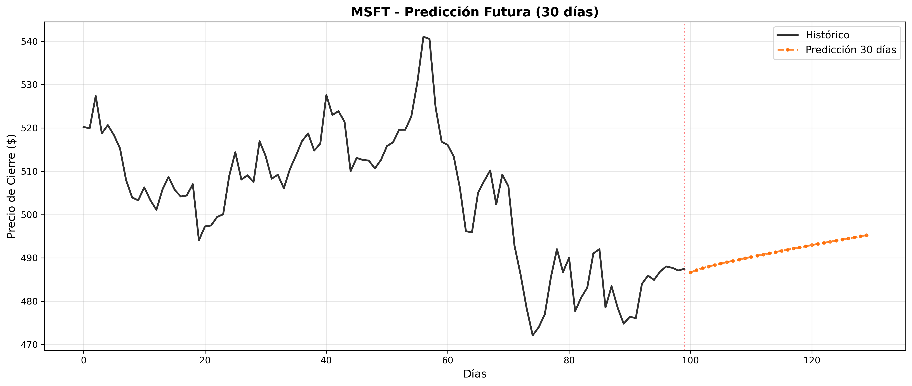
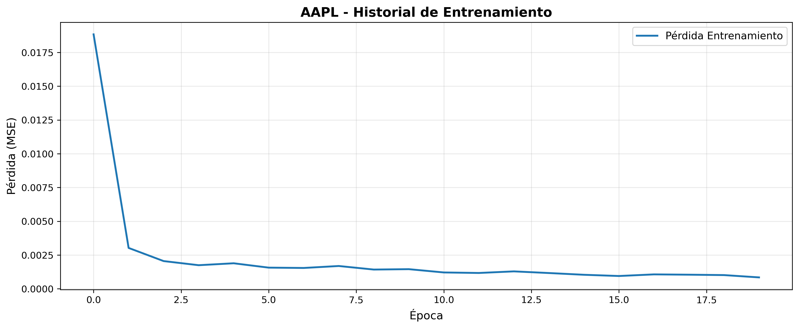
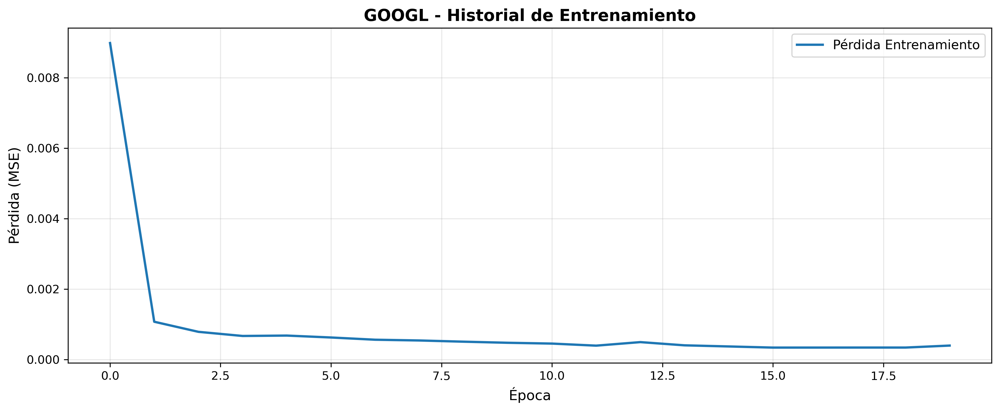
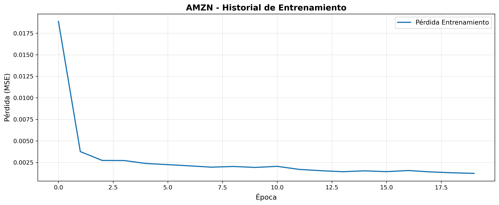
A 2-layer LSTM recurrent network with dropout regularisation to prevent overfitting:
config.pyPart of the project's rigour is documenting what this kind of system cannot do: